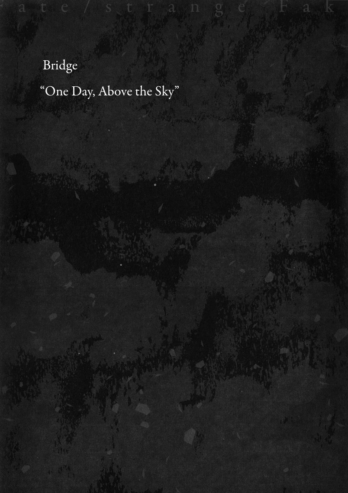
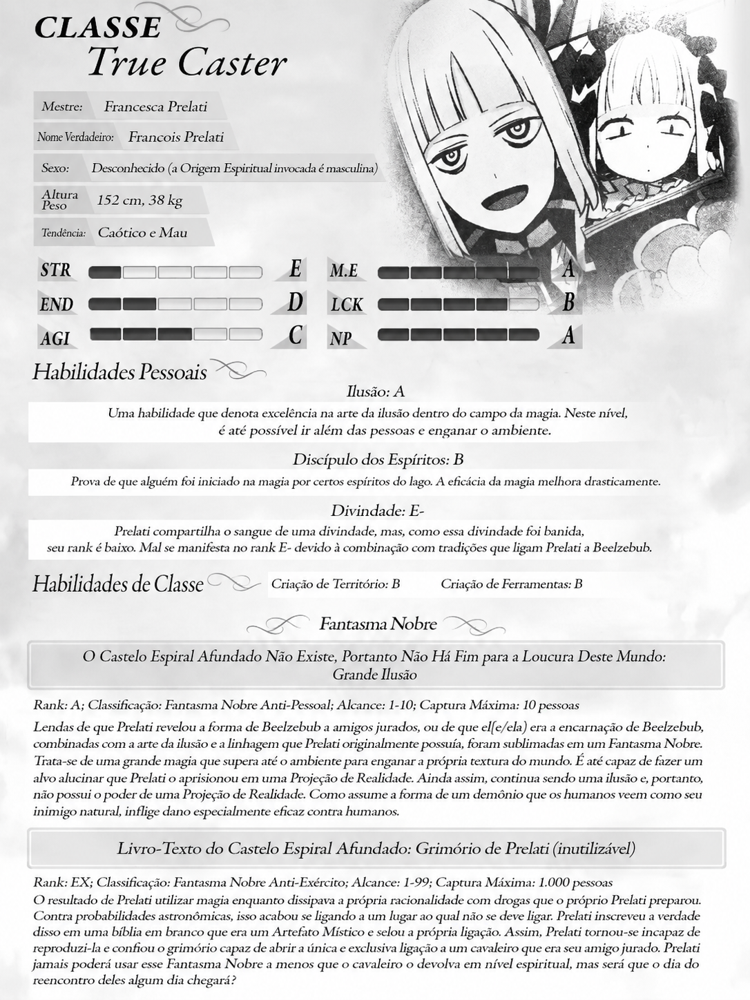
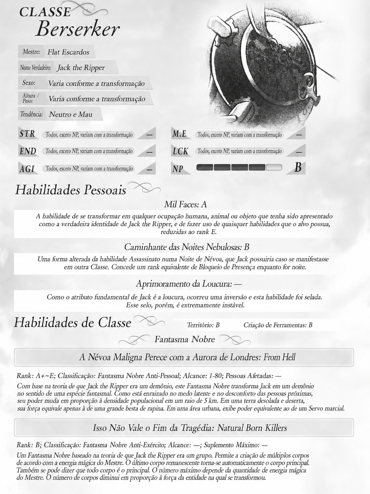

Dia três. Manhã.
"Agora, a previsão do tempo. Dando seguimento ao sistema de baixa pressão que se formou a oeste de Las Vegas..."
O noticiário de sempre fluía da TV. Os moradores da cidade iam para seus respectivos trabalhos, ora satisfeitos, ora preocupados com o clima que se aproximava.
Snowfield ainda não havia entrado em estado de pânico. Faldeus estava, em sua maior parte, satisfeito com esse resultado. Conseguia encobrir sozinho a maioria dos distúrbios e já confirmara que, com a ajuda de Francesca, podia conter incidentes de escala maior até certo ponto.
"Como lidar com o incidente no hospital na noite passada... A esta altura, Assassin também já deve estar começando a assassinar Galvarosso..."
Tais assuntos ocupavam os pensamentos de Faldeus quando uma comunicação secreta chegou por seu canal pessoal. Não vinha de dentro de Snowfield. Vinha da divisão especial em Washington — os "verdadeiros mandantes" — que lhe dava respaldo.
"...Aqui é Faldeus. O que foi, General?" "...Você viu as notícias?" A voz solene do homem que ele chamava de "General" levou Faldeus a voltar a atenção para o noticiário local que acabara de ir ao ar. Nada, porém, lhe chamou a atenção como particularmente importante, então ele trocou para os programas nacionais. Ali, viu a notícia de que um candidato fortíssimo na próxima eleição presidencial morrera de causas naturais.
"Oh... E ainda diziam que ele já estava com a eleição no bolso. Que falta de sorte. Ainda assim, não creio que isso diga respeito diretamente ao seu setor, General."
"...Você não teve nada a ver com isso, teve?" "Como assim?" "Não foi só ele. Trinta e cinco magnatas das finanças, personalidades de peso da mídia e até líderes de grandes lobbies morreram de repente, por acidentes ou causas naturais, só durante a tarde de ontem. Todos tinham uma linha direta e robusta com a Casa Branca."
"..." "As autópsias concluíram, sem deixar sombra de dúvida, que as mortes foram acidentais ou naturais. É justamente isso que tem levado algumas pessoas a pensar que essa coincidência deve ter alguma relação com magia. Pelo momento em que ocorreu, é natural suspeitar de uma ligação com o ritual de vocês", informou o general a Faldeus num tom que deixava claro que tais dúvidas ainda não haviam sido dissipadas. Ele soltou um longo suspiro e então abandonou a postura puramente profissional.
"Ainda não reportei isso ao presidente. Se descobrir qualquer conexão com o ritual em Snowfield, entre em contato comigo o mais rápido possível."
Faldeus pensou naquele dia, que mais tarde entraria em livros de lendas urbanas como o "Dia Amaldiçoado dos Estados Unidos". Então, depois de pesquisar por conta própria na internet os horários e locais em que aquelas trinta e cinco pessoas haviam morrido e ligá-los num mapa... concluiu que tudo se concentrava no quartel-general de Galvarosso Scladio e seguia a ordem de proximidade em relação a ele. Era quase como se um anjo da morte tivesse saído do quartel-general dos Scladio e ido eliminando seus alvos na ordem em que os encontrava.
Faldeus não era magnânimo a ponto de olhar para aquilo e afirmar com certeza: "Hassan-i Sabbah não pode estar envolvido." Também não era descarado o bastante para fingir que não tinha visto.
Ele não sabia se o importantíssimo Galvarosso estava vivo ou morto. Mesmo que estivesse morto, era óbvio que os magos da Família Scladio esconderiam esse fato por algum tempo.
"Hassan... Onde você está...? E o que está fazendo...?" Foi nesse momento que Faldeus percebeu: aquele "ritual" já não se limitava a Snowfield. Estava começando a espalhar sua maldição por todos os Estados Unidos. E Francesca provavelmente esperava isso desde o início.
Como se quisessem chutar o homem caído, os apresentadores do noticiário lançaram-se numa notícia urgente.
"Isto é um complemento da previsão do tempo: observadores informam que o sistema de baixa pressão que se formou a oeste de Las Vegas está aumentando rapidamente de força e se transformou num furacão de proporções gigantescas."
"...?" Na imagem de satélite exibida pela TV, ele conseguiu confirmar um furacão colossal com mais de oitocentos quilômetros de diâmetro.
"Não há precedentes para um desenvolvimento assim..." "No Parque Nacional do Vale da Morte, uma tempestade de areia está..." "Sua trajetória projetada segue em linha reta para Snowfield..." "...Está mesmo indo em linha reta, não está? Uma coisa dessas é possível?"
"É quase como se o furacão tivesse vontade própria." "Agora não é hora de fazer piada." Começou então a fluir um redemoinho caótico de informações. Faldeus separou instintivamente os fatos, ergueu os olhos para o teto com resignação parcial e murmurou:
"Quem está fazendo isso...? Qual facção?
"Que diabo... eles estão tentando invocar para esta cidade...?"
Snowfield. Vinte quilômetros acima do solo.
"Depressa." O gigantesco dirigível que servia de ateliê a Prelati. De pé sobre a porção inflada da aeronave, Filia fitava o céu muito ao sudoeste. Continuava assentindo, satisfeita, enquanto observava uma massa de nuvens visível no horizonte curvo. Mesmo em escala global, aquilo era gigantesco.
"Isso mesmo. Eu te puxei de um 'ramo' que nem parece se ligar a lugar nenhum, mas, bem, por um tempinho isso não deve ser problema, certo? Quer dizer, a 'eu' daquela era mal deve conseguir usar a própria Autoridade..."
Então estendeu a mão para a massa de nuvens, a centenas de quilômetros de distância, como se contemplasse um animal de estimação querido, e falou como se se dirigisse diretamente a ela.
"Não se preocupe; não vou começar nada antes de você chegar. Vamos nos vingar todos juntos." Em seu rosto havia um sorriso, mas era um sorriso completamente desprovido de qualquer humanidade. Em certo sentido, carregava um terror exatamente oposto ao de Bazdilot.
E, ao voltar esse sorriso para baixo, ele passou a exprimir um desejo de matar impossível de pôr em palavras. "...Daquele par insolente de ingratos."
Ateliê de Francesca.
"A pessoa em cima do dirigível está agindo meio assustadora..." "Não ligue para ela. Ela está encarando os dois lá no chão, não a gente." Embora as palavras de Prelati a acalmassem, Francesca estufou as bochechas num muxoxo.
"Aaah, eu queria mesmo que ela largasse esse ressentimento sem fundamento e fosse embora...
"Enfrentar os dados de uma deusa quebrada não teria graça nenhuma!"
Sem saber que estava sendo alvo de reclamações bem abaixo de si, a "coisa" que possuíra o corpo de Filia falou com o furacão distante a oeste num tom que quase soava como autopiedade.
"Quando você chegar, eu vou restaurar sua forma adequada...
"Pode ansiar por isso, Gugalanna!"
próximo episódio: [Fake05]

